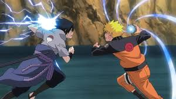
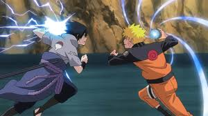

Time 7
Conheça Uzumaki Naruto!
Conheçam Uzumaki Naruto! Doze anos atrás, a vila dos ninjas, Konoha, foi atacada pelo demônio-raposa de nove caudas. Todos os ninjas se reuniram para tentar parar a besta de cauda, mas as forças não eram iguais. Então, o Quarto Hokage sacrificou sua vida para capturar o demônio e selá-lo no corpo de um menino recém-nascido, chamado Naruto Uzumaki.


 
